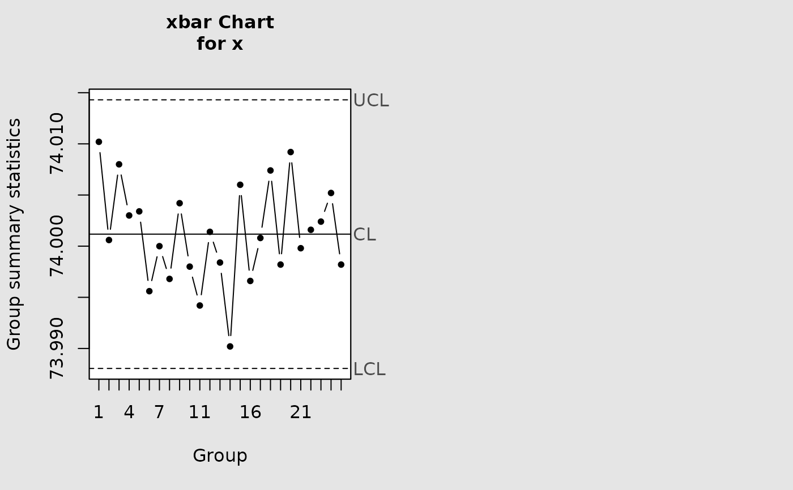
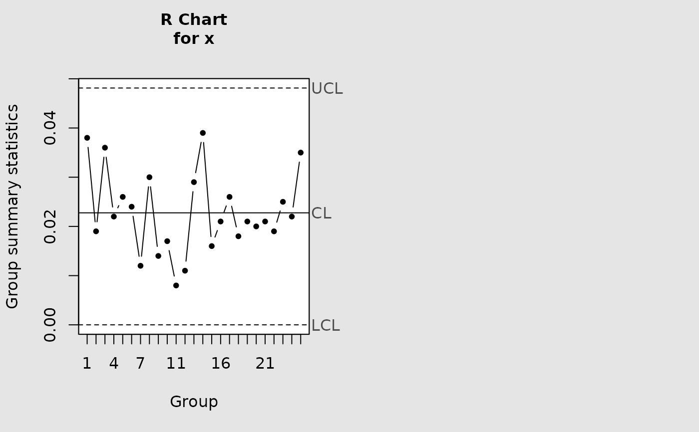

Draws the X-bar control chart and the R (range) control chart side by side in the same graphics window, using estimated Phase I control limits. Both charts share the same subgroup data.
References
Montgomery, D.C., (2009). "Introduction to Statistical Quality Control". Chapter 6. Wiley.
Examples
data(pistonrings)
attach(pistonrings)
cchart.Xbar_R(pistonrings[1:25, ], 5)


#> List of 11
#> $ call : language qcc(data = x, type = "R", add.stats = FALSE)
#> $ type : chr "R"
#> $ data.name : chr "x"
#> $ data : num [1:25, 1:5] 74 74 74 74 74 ...
#> ..- attr(*, "dimnames")=List of 2
#> $ statistics: Named num [1:25] 0.038 0.019 0.036 0.022 0.026 ...
#> ..- attr(*, "names")= chr [1:25] "1" "2" "3" "4" ...
#> $ sizes : Named int [1:25] 5 5 5 5 5 5 5 5 5 5 ...
#> ..- attr(*, "names")= chr [1:25] "1" "2" "3" "4" ...
#> $ center : num 0.0228
#> $ std.dev : num 0.00979
#> $ nsigmas : num 3
#> $ limits : num [1, 1:2] 0 0.0481
#> ..- attr(*, "dimnames")=List of 2
#> $ violations:List of 2
#> - attr(*, "class")= chr "qcc"